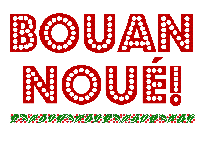

Ch'est une chose surprennante, nous n'peut sorti d'hors tout chu temps sans rencontré des gens a la fache èspannie. Riche houmme, pouôre houmme, mathié ou veuf, sans èsfants ou ov eunne racachie d'marmaille a ses rousses - y's ont tous l'air, ou font sembliant, de r'lizé d'bouonne humeu. Y'a des veuves qui vos souorient dans l's'iers, des filles qui mettent lus lèvres en tcheur et vos font des p'tits si'nnes de tête et des méthes de famille qui s'proumennent ov deus-très filles a mathié ov lus bras chergis d'patchets et lus pouchettes de chucrins. et faut vaie, nos couôsins d'la campanne! qu'ont abandounné tchéthue et griffon, mât'tie d'poummes-de-terre et èscred'dies de ch'vaux - faut les vaie sus les pavés d'la ville, a feummé d'grand longues cigares de deux sous, les mains dans les pouchettes, s'craulant les hanques, et l'chapé d'travers! Faut les vaie quand y passent - et y preunent bouon soin d'passé et r'passé souvent - endrét les d'mouèzelles de tchi j'vos pâsle. Coumme y s'dréchent! Coumme la feummée sort a grosses bouffées et coumme lus yeux rouollent. Et coumme lus tallons tappent sec sus l'pavé quand y craient qu'Mad'mouézelle les a r'mértchis! Et, pus ou mains souvent, ou les r'mérque, la p'tite matine! Vous qu'etes un vi, ou n'vos etes aperchu d'rin! Mais quoé'que ses yeux fussent baîssis modestement, et, sans dèstouonné la tête; sans qu'mémée en visse rin, la carre de s'n'yi s'est tout d'mème ouvert et r'freumé coumme eunne trape a souothie, assez longtemps pour envié un èspar de feu dans l'tcheu du jeunne fermi.
Et tandi qu'mémée est a prom'né les filles dans la Rue d'Driéthe pour admithé les belles choses a la d'ventuthe des boutiques, et offuche régalé les filles d'eunne tasse de tée et des gaches siez Orviss; l'bouonhoumme a 'té faithe un tou d'Féthe pour oué les dernié nouvelles sus ch'qui s'passe au Board Room, et si ch'est vrai que l'Sécrétaithe s'en va avé ses gages hauchis. Il etha 'té p't'ètre bèthe un café siez Ordinaire, l'bouonhoumme, je n'le biame pas, et d'visé ov un fermi d'l'Est sus tchès qu'nou f'tha d'ses sous quand Moussieu Dunlop lus étha montré a doublié les récoltes tout en mettant la maintchi mains d'guano. Et pis, quand vindra l'sé, toute la famille se r'trouv'tha endret la boutique a Mess Pithouét; l'bouonhoumme s'a offuche le moindrement trop rouoge de fache, Missis étha ésdgéthé yeunne des filles, l'autre voudrait resté pour vaie la ville escliéthie. Mais bétot tout l'monde mont' dans l'quèrre, touos les patchets et la jougue s'ont en plieche, et... "Cache don douochement a travers la ville, que nous vaie chès belles choses la oquo eunne fais avant d'nos n'allé ditha mémée.
Et ch'est d'mème partout! Tous sont d'bouonne humeu et resjouis; et dèspensent des douze sous - et jusqu'a des sh'lings - sans compté. Jusqu'a ma femme qui m'aloue d'mangi d'la glée ov ma beurrée d'beurre! Ch'est vos dithe si tout est a la jouée siez les Pain! Ch'est viyant qu'ch'est Noué, chose seuthe, car d'amor Laizé vos gratte cheunna d'près.
Jusqu'a Lonore qui sauticotte coumme un pinchon! Ou s'attend mithacye pour yeunne de chés niets. Tchiq'un y'a conté eunne histouéte de r'venant; et oul a pendu toutes les cauches d'la maison a l'entou du mitheux, a des clious, et dans les d'grès. Y'a un photome qu'est pour v'né l's'emplyi d'chucrins et jambon mayassé. La pouore èsfant! Si par malheu n'y'avait rin dans ses cauches, sa méthe craint qu'oul en f'thai eunne maladie. J'avons décidé entrenous, au cas qu'san photome lis f'thait faux-bond, d'mettre du p'tun et du fromage dédans, et lis dithe que ch'tait des presents a l'usage de toute la famille.
Ah! Tandi qu'j'y sis, et qui n'en couote rin, autant vaut vos souhaité un bouon Noué et eunne bouonne Nouvelle Année!
Laizé m'dit d'mertchi qu'touos les siens qui s'comportéthont bin dans chu monde étont les miyeu plieches dans l'autre. Ch'est la eunne grand consolation pour touos nous qui soummes de chu connon la.
Piteur Pain
The Morning News 27/12/1912
Viyiz étout: